Расчет параметров и индукции магнитного поля систем
прямоугольных катушек.
Линейка программ Rectangular n-Coils
System
1. Введение
При генерации в достаточно больших объемах (от долей до десятков кубометров) магнитных полей с заданными свойствами с индукцией порядка единиц Гауссов (сотни мкТл), как однородных, так и специально неоднородных, могут использоваться системы катушек, каждая из которых, как правило, представляет собой прямоугольную рамку, так как подобные катушки при размерах около метра и более проще и технологичнее в изготовлении, чем круглые, например, катушки Гельмгольца [8]. Создаваемое системой катушек магнитное поле может использоваться или для компенсации магнитного поля Земли (создание зон магнитного вакуума, сопоставимых по объему с объемом системы катушек) или для самостоятельного воздействия на изучаемые объекты. Дополнительным преимуществом таких систем является простота пространственного доступа. Примененный ранее подход для расчета магнитного поля прямоугольной катушки и систем из трех соосных прямоугольных катушек [6] может быть распространен и на системы из произвольного числа прямоугольных катушек, причем катушки в системе могут быть или соосными или несоосными, но с параллельными друг другу плоскостями намотки, или вообще произвольно ориентированными в пространстве.
2. Прямоугольная катушка
Прямоугольная катушка – соленоид с центральным отверстием в форме прямоугольного параллелепипеда. Внешняя форма прямоугольной катушки при небольшой толщине обмотки приближается к форме прямоугольного параллелепипеда. Как правило, такие катушки и используются при построении вышеупомянутых систем катушек, причем для целей расчета магнитного поля катушка вообще может рассматриваться как тонкий прямоугольный виток. Эскиз прямоугольной катушки с обозначениями основных размеров показан на рис. 2.1.
Рис. 2.1. Эскиз прямоугольной катушки: a1 – длина отверстия, a2 – длина катушки, a – средняя длина катушки, b1 – ширина отверстия, b2 – ширина катушки, b – средняя ширина катушки, H – высота катушки.
Задаваемые параметры
прямоугольной катушки:
Длина отверстия a1
Длина катушки a2
Средняя длина катушки a:
Ширина отверстия b1
Ширина катушки b2
Средняя ширина катушки b:
Толщина обмотки может считаться постоянной, поэтому выполняется соотношение:
Таким образом, один из параметров a1, a2, b1, b2 является зависимым от трех остальных. Например:

Средняя ширина катушки b:
Высота катушки H
Диаметр обмоточного провода D
Фактор упаковки (коэффициент заполнения)
l =
LAMBDA = Lambda (отношение площади, занятой
проводом в поперечном сечении обмотки без учета изоляции, к площади поперечного
сечения обмотки) [7]
Удельное сопротивление обмоточного провода
rE
= Roe
Плотность материала обмоточного провода
r
= Ro
Найти расчетные параметры отдельной прямоугольной катушки и индукцию ее магнитного поля можно с помощью программы Rectangular Coil [6].
Расчет индукции магнитного поля
прямоугольной катушки с обмоткой, толщина которой составляет до 5 ... 10 % от
поперечных размеров, с достаточно хорошей точностью может быть выполнен в
приближении тонкого витка, проходящего по центру обмотки с током, равным числу
ампер-витков катушки, с использованием закона Био-Савара-Лапласа
[4]. Для расчета параметров и магнитного поля системы прямоугольных
катушек с малой толщиной намотки необходимыми являются следующие задаваемые
величины:
a[i] - средняя длина i-й
катушки
b[i] - средняя ширина i-й
катушки
N[i] - число витков i-й
катушки
I[i] - ток через обмотку i-й
катушки
D[i] - диаметр обмоточного провода
i-й катушки
rE[i]
= Roe[i] - удельное электрическое сопротивление
обмоточного провода i-й катушки
3. Программы Rectangular n-Coils System различных версий для расчета систем прямоугольных катушек в операционной системе Windows
На практике обычно применяются системы соосных прямоугольных (чаще - квадратных) катушек, которые используются для создания однородного магнитного поля в достаточно большом объеме, составляющем существенную долю от объема, занимаемого самой системой [1 - 3]. При этом доступ в такие системы может быть гораздо проще, чем в кольца Гельмгольца [8]. Изготовление подобных катушек больших размеров является более технологичным по сравнению с круглыми. Также из прямоугольных (обычно близких по форме к квадратным) катушек строятся двух- и трехкоординатные системы генерации магнитного поля.
Система прямоугольных катушек может быть охарактеризована посредством параметров отдельных катушек (п. 2) с учетом того, что геометрические размеры и свойства обмоточного провода могут отличаться от катушки к катушке. Дополнительными исходными параметрами являются величины сдвига катушек относительно центра системы (точка с координатами (0, 0, 0)) и углы поворота каждой катушки относительно собственных осей.
Программы Rectangular n-Coils System различных версий предназначены для работы под управлением операционной системы семейства Windows. Требования к компьютеру: начиная от Pentium I, рабочая частота от 100 МГц, оперативная память от 32 Мбайт, необходимое место на жестком диске менее 5 Мбайт. Расчеты производятся в системе СИ в декартовой прямоугольной системе координат. Ввод данных осуществляется с клавиатуры или из текстового файла, результаты расчета выводятся на экран монитора или сохраняются в текстовый файл для дальнейшей обработки.
3.1. Программа Rectangular n-Coils System версия 1.0
Программа позволяет рассчитывать параметры и индукцию магнитного поля системы соосных прямоугольных катушек (рамок с малой толщиной намотки). Главное окно программы с расчетными значениями для пробных входных данных показано на рис. 3.1.1.
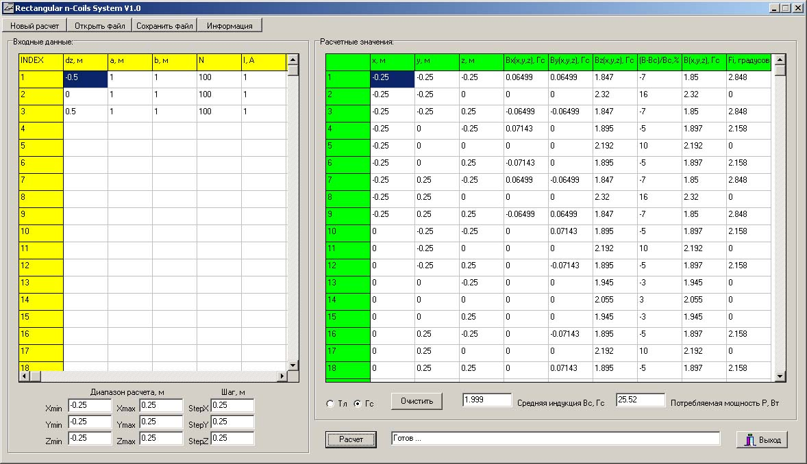
Рис. 3.1.1. Главное окно программы Rectangular n-Coils System V1.0 с расчетными значениями для пробных входных данных. Центр системы (начало координат - точка (0, 0, 0)) совпадает с центром второй катушки (INDEX = 2).
Входные данные:
INDEX
= {1 … 100} – номер катушки в системе
Сдвиг центра INDEX-катушки по оси Z от начала
координат (0, 0, 0) dz[INDEX], м
(начало координат (центр системы) совпадает с центром
той катушки, для которой dz = 0)
Длина INDEX-катушки a[INDEX],
м, a[INDEX] > 0
Ширина INDEX-катушки b[INDEX],
м, b[INDEX] > 0
Число витков INDEX-катушки
N[INDEX], N[INDEX] > 0
Ток через INDEX-катушку
I[INDEX], А
Диаметр обмоточного провода INDEX-катушки
D[INDEX], мм,
D[INDEX] > 0
Удельное электрическое сопротивление провода INDEX-катушки
Roe[INDEX], Ом ∙ м, Roe[INDEX]
> 0
Расчетная координатная сетка (область расчетных значений) задается указанием
минимальных и максимальных значений по всем координатам (Xmin, Xmax,
Ymin, Ymax,
Zmin, Zmax) и шага сетки по
каждой координате (StepX, StepY, StepZ), м, Xmax >
Xmin, Ymax >
Ymin, Zmax >
Zmin
Для выбора единиц магнитной индукции служит переключатель «Тл – Гс»
Расчетные
значения:
Активное сопротивление INDEX-катушки R[INDEX], Ом
Падение напряжения на INDEX-катушке U[INDEX], В
Координаты расчетной сетки x, y,
z, м
Компоненты вектора магнитной индукции в точке расчета (x, y, z) Bx(x,
y, z), By(x,
y, z), Bz(x,
y, z), Тл или Гс
Модуль магнитной индукции в точке расчета (x,
y, z) B(x,
y, z), Тл или Гс
Среднее значение модуля магнитной индукции в области расчетных значений
(усредненное значение по всем узлам расчетной сетки) Bc,
Тл или Гс
Отклонение модуля магнитной индукции в точке расчета (x, y, z) от среднего
значения модуля магнитной индукции в расчетной области Bc, %
Угол между вектором магнитной индукции в точке расчета (x, y, z) и осью Z
системы катушек Fi, градусов
Суммарная потребляемая активная мощность P, Вт
После запуска exe-файла программы можно напрямую вводить входные параметры системы катушек в таблицу «Входные данные:». Если система катушек состоит из множества однотипных катушек, то для ускорения ввода можно воспользоваться клавишей «Новый расчет». После ее нажатия появится форма для ускоренного ввода параметров однотипных катушек с заданным расстоянием между ними (рис. 3.1.2). После того, как входные данные с помощью этой формы будут введены с помощью кнопки «Ввод-Выход», их при необходимости можно откорректировать в основном окне программы (рис. 3.1.1).
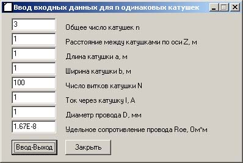
Рис. 3.1.2. Форма для ускоренного ввода входных параметров однотипных катушек для программы Rectangular n-Coils System V1.0.
При вводе входных параметров необходимо учитывать принятый в операционной системе формат разделителя для десятичной дроби – запятая или точка. Если формат разделителя неправильный (операционная система выдает сообщение об ошибке), то необходимо либо поменять формат разделителя при вводе данных в программу (использовать запятую), либо поменять формат разделителя в операционной системе Windows с запятой на точку (Например, для Windows XP: Мой компьютер – Панель управления – Язык и региональные стандарты – Настройка – Разделитель целой и дробной части. Установить точку). При вводе данных в экспоненциальном формате (например, 1.67E-8 вместо 0.0000000167) необходимо использовать латинский алфавит для буквы E, при вводе русской буквы Е вместо латинской E на экран монитора при попытке расчета будет выводиться сообщение об ошибке (к цифрам это не относится).
Далее можно производить расчет выходных параметров нажатием на кнопку «Расчет». Программа производит проверку корректности входных параметров и в случае их выхода за пределы возможного диапазона выдает соответствующее сообщение. Рассчитанные параметры заносятся в таблицу «Расчетные значения» и в окна «Средняя индукция Bc, Тл или Гс» и «Потребляемая мощность P, Вт». Время расчета зависит от количества катушек в системе и числа узлов расчетной сетки и составляет обычно порядка от 1 до 10 секунд. Порядок точности расчета на уровне 5 %.
В некоторых случаях для удобства работы можно очистить таблицу «Расчетные значения:» с помощью кнопки «Очистить».
Входные и выходные параметры могут быть записаны в три текстовых файла (типа csv). После нажатия на кнопку «Сохранить файл» открывается диалоговое окно, в котором предлагается выбрать имя файла для входных данных и его формат (десятичный разделитель в виде точки или запятой). В этот файл записываются данные из таблицы «Входные данные:». Во второй файл, к имени которого добавляется _Range, записываются параметры расчетной сетки. В третий файл, к имени которого добавляется _Results, записываются данные из таблицы «Расчетные значения:».
Входные параметры могут быть загружены из текстового файла (типа csv). После нажатия на кнопку «Открыть файл» открывается диалоговое окно, в котором предлагается выбрать файл для загрузки. Программа проверяет правильность формата файла и заносит данные в таблицу «Входные данные:» и в окна для задания параметров расчетной сетки.
Оперативно получить справочную информацию по программе можно, нажав кнопку «Информация». При этом открывается окно «Справочная информация» (рис. 3.1.3).
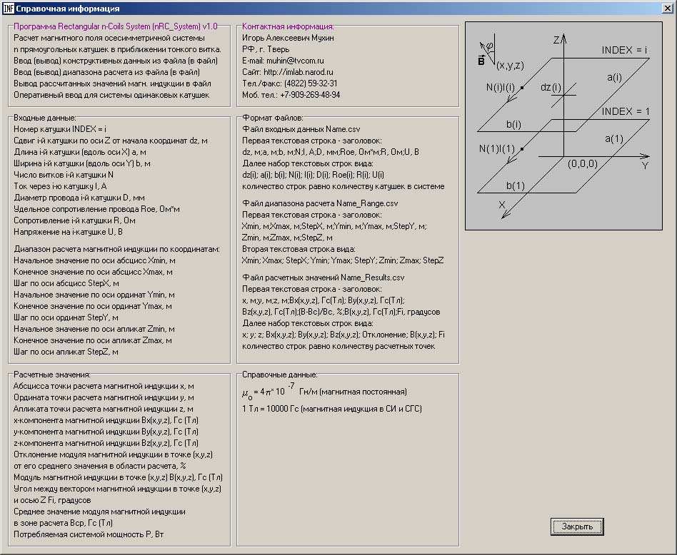
Рис. 3.1.3. Окно «Справочная информация» программы Rectangular n-Coils System V1.0.
Завершить работу программы можно с помощью кнопки «Выход». Проверить правильность расчета на данном компьютере для пробных входных данных можно по главному окну программы на рис. 3.1.1.
Демонстрационная версия программы Rectangular n-Coils System V1.0: nRC_System10d.rar (~245 Кб). Скопированные файлы могут быть проверены на отсутствие вирусного кода в режиме on-line [5]. В демо-версии программы Rectangular n-Coils System V1.0 отсутствует возможность работы с файлами, а магнитная индукция рассчитывается только на оси системы.
Файл nRC_System10d.rar необходимо распаковать в заранее созданную папку. Упаковка производилась с помощью WinRar 3.60. Результат распаковки: nRC_System10d.exe - исполняемый файл программы. После запуска программы можно вводить входные данные и производить расчет нажатием соответствующей кнопки. При вводе входных данных необходимо учитывать принятый в ОС формат разделителя для десятичной дроби – точка или запятая (например, 0.005 или 0,005). Если в ОС формат разделителя запятая, то ввод производится с запятой, в противном случае будет выдаваться сообщение об ошибке. Смена формата разделителя десятичной дроби в ОС: Мой компьютер - Панель управления - Язык и стандарты - Настройка - Установить разделитель целой и дробной части. Корректность расчета можно проверить по рис. 3.1.4.
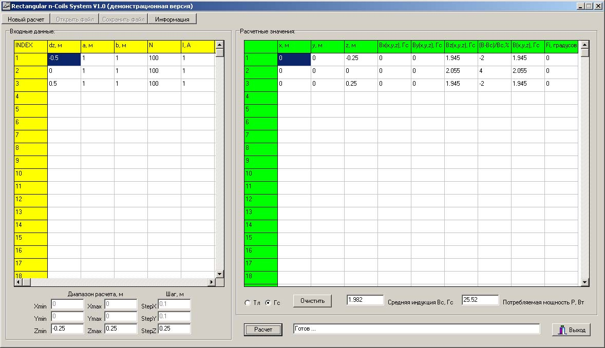
Рис. 3.1.4. Главное окно программы Rectangular n-Coils System V1.0 demo (демонстрационная версия) с расчетными значениями для пробных входных данных. Центр системы (начало координат - точка (0, 0, 0)) совпадает с центром второй катушки (INDEX = 2).
3.2. Программа Rectangular n-Coils System версия 1.11
Программа позволяет рассчитывать параметры и индукцию магнитного поля системы прямоугольных катушек (рамок с малой толщиной обмотки), плоскости намотки которых параллельны друг другу.. Сами катушки могут быть как соосными, так и не соосными. Главное окно программы с расчетными значениями для пробных входных данных показано на рис. 3.2.1.
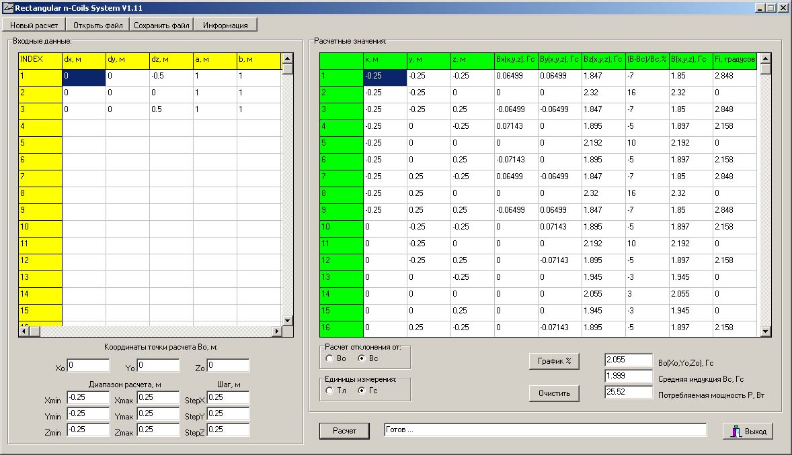
Рис. 3.2.1. Главное окно программы Rectangular n-Coils System V1.11 с расчетными значениями для пробных входных данных. Центр системы (начало координат - точка (0, 0, 0)) совпадает с центром второй катушки (INDEX = 2).
Входные данные:
INDEX
= {1 … 100} – номер катушки в системе
Сдвиг центра INDEX-катушки по оси X от начала
координат (0, 0, 0) dx[INDEX],
м
Сдвиг центра INDEX-катушки по оси Y
от начала координат (0, 0, 0) dy[INDEX],
м
Сдвиг центра INDEX-катушки по оси Z от начала
координат (0, 0, 0) dz[INDEX], м
(начало координат (центр системы) совпадает с центром
той катушки, для которой dz = dy = dz = 0)
Длина INDEX-катушки a[INDEX],
м, a[INDEX] > 0
Ширина INDEX-катушки
b[INDEX], м,
b[INDEX] > 0
Число витков INDEX-катушки
N[INDEX], N[INDEX] > 0
Ток через INDEX-катушку
I[INDEX], А
Диаметр обмоточного провода INDEX-катушки
D[INDEX], мм,
D[INDEX] > 0
Удельное электрическое сопротивление провода INDEX-катушки
Roe[INDEX], Ом ∙ м, Roe[INDEX]
> 0
Расчетная координатная сетка (область расчетных значений) задается указанием
минимальных и максимальных значений по всем координатам (Xmin, Xmax,
Ymin, Ymax,
Zmin, Zmax) и шага сетки по
каждой координате (StepX, StepY, StepZ), м, Xmax >
Xmin, Ymax >
Ymin, Zmax >
Zmin
Точка с координатами (Xo, Yo, Zo), м, для расчета опорного значения модуля
магнитной индукции Bo(Xo, Yo, Zo)
Для выбора единиц магнитной индукции служит переключатель «Тл – Гс»
С помощью переключателя «Bo – Bc» можно выбрать значение модуля магнитной
индукции, относительно которого считается отклонение модуля магнитной индукции в
заданной точке
Расчетные
значения:
Активное сопротивление INDEX-катушки R[INDEX], Ом
Падение напряжения на INDEX-катушке U[INDEX], В
Координаты расчетной сетки x, y,
z, м
Компоненты вектора магнитной индукции в точке расчета (x, y, z) Bx(x,
y, z), By(x,
y, z), Bz(x,
y, z), Тл или Гс
Модуль магнитной индукции в точке расчета (x,
y, z) B(x,
y, z), Тл или Гс
Среднее значение модуля магнитной индукции в области расчетных значений
(усредненное значение по всем узлам расчетной сетки) Bc,
Тл или Гс
Опорное значение модуля магнитной индукции в точке (Xo, Yo, Zo) Bo(Xo,
Yo, Zo), Тл или Гс
Отклонение модуля магнитной индукции в точке расчета (x, y, z) от среднего
значения модуля магнитной индукции в расчетной области Bc или от опорного
значения магнитной индукции Bo(Xo, Yo, Zo), %
Угол между вектором магнитной индукции в точке расчета (x, y, z) и осью Z
глобальной системы координат Fi, градусов
Суммарная потребляемая активная мощность P, Вт
После запуска exe-файла программы можно напрямую вводить входные параметры системы катушек в таблицу «Входные данные:». Если система катушек состоит из множества однотипных катушек, то для ускорения ввода можно воспользоваться клавишей «Новый расчет». После ее нажатия появится форма для ускоренного ввода параметров однотипных катушек с заданным расстоянием между ними (рис. 3.2.2). После того, как входные данные с помощью этой формы будут введены с помощью кнопки «Ввод-Выход», их при необходимости можно откорректировать в основном окне программы (рис. 3.2.1).
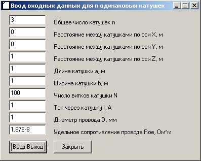
Рис. 3.2.2. Форма для ускоренного ввода входных параметров однотипных катушек для программы Rectangular n-Coils System V1.11.
При вводе входных параметров необходимо учитывать принятый в операционной системе формат разделителя для десятичной дроби – запятая или точка. Если формат разделителя неправильный (операционная система выдает сообщение об ошибке), то необходимо либо поменять формат разделителя при вводе данных в программу (использовать запятую), либо поменять формат разделителя в операционной системе Windows с запятой на точку (Например, для Windows XP: Мой компьютер – Панель управления – Язык и региональные стандарты – Настройка – Разделитель целой и дробной части. Установить точку). При вводе данных в экспоненциальном формате (например, 1.67E-8 вместо 0.0000000167) необходимо использовать латинский алфавит для буквы E, при вводе русской буквы Е вместо латинской E на экран монитора при попытке расчета будет выводиться сообщение об ошибке (к цифрам это не относится).
Далее можно производить расчет выходных параметров нажатием на кнопку «Расчет». Программа производит проверку корректности входных параметров и в случае их выхода за пределы возможного диапазона выдает соответствующее сообщение. Рассчитанные параметры заносятся в таблицу «Расчетные значения» и в окна «Средняя индукция Bc, Тл или Гс» и «Потребляемая мощность P, Вт». Время расчета зависит от количества катушек в системе и числа узлов расчетной сетки и составляет обычно порядка от 1 до 10 секунд. Порядок точности расчета на уровне 5 %.
В некоторых случаях для удобства работы можно очистить таблицу «Расчетные значения:» с помощью кнопки «Очистить».
При нажатии на кнопку «График, %» на новой форме выводится график отклонений (в процентах) модуля магнитной индукции в расчетных точках от среднего значения модуля магнитной индукции в расчетной области (Bc) или от опорного значения модуля магнитной индукции Bo(Xo, Yo, Zo). По этому графику можно приблизительно оценить неоднородность поля в расчетной области (рис. 3.2.3).
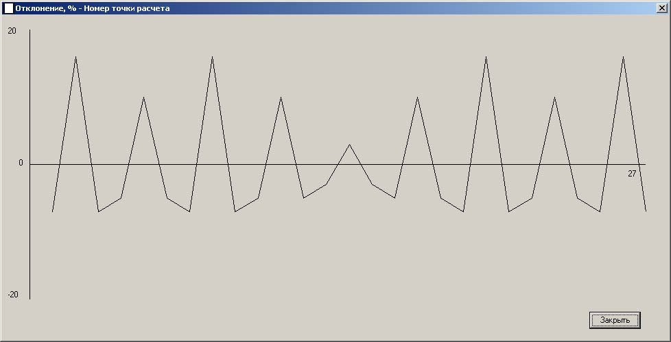
Рис. 3.2.3. Форма для вывода графика отклонений модуля магнитной индукции в расчетной области для программы Rectangular n-Coils System V1.11.
Входные и выходные параметры могут быть записаны в три текстовых файла (типа csv). После нажатия на кнопку «Сохранить файл» открывается диалоговое окно, в котором предлагается выбрать имя файла для входных данных и его формат (десятичный разделитель в виде точки или запятой). В этот файл записываются данные из таблицы «Входные данные:». Во второй файл, к имени которого добавляется _Range, записываются параметры расчетной сетки. В третий файл, к имени которого добавляется _Results, записываются данные из таблицы «Расчетные значения:».
Входные параметры могут быть загружены из текстового файла (типа csv). После нажатия на кнопку «Открыть файл» открывается диалоговое окно, в котором предлагается выбрать файл для загрузки. Программа проверяет правильность формата файла и заносит данные в таблицу «Входные данные:» и в окна для задания параметров расчетной сетки.
Оперативно получить справочную информацию по программе можно, нажав кнопку «Информация». При этом открывается окно «Справочная информация» (рис. 3.2.4).
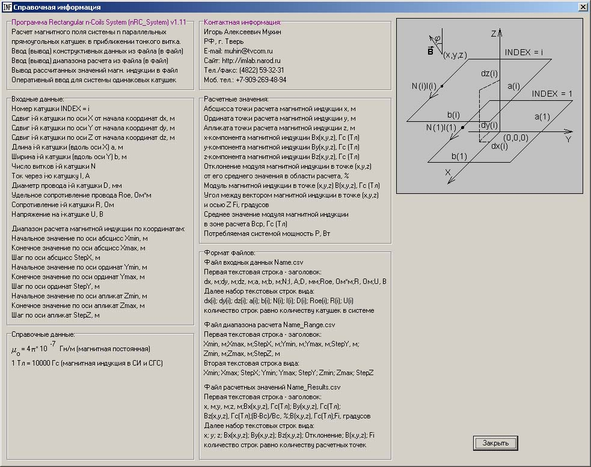
Рис. 3.2.4. Окно «Справочная информация» программы Rectangular n-Coils System V1.11.
Завершить работу программы можно с помощью кнопки «Выход». Проверить правильность расчета на данном компьютере для пробных входных данных можно по главному окну программы на рис. 3.2.1.
3.3. Программа Rectangular n-Coils System версия 1.2
Программа позволяет рассчитывать параметры и индукцию магнитного поля системы произвольно расположенных друг по отношению к другу прямоугольных катушек (рамок с малой толщиной обмотки). Главное окно программы с расчетными значениями для пробных входных данных показано на рис. 3.3.1.
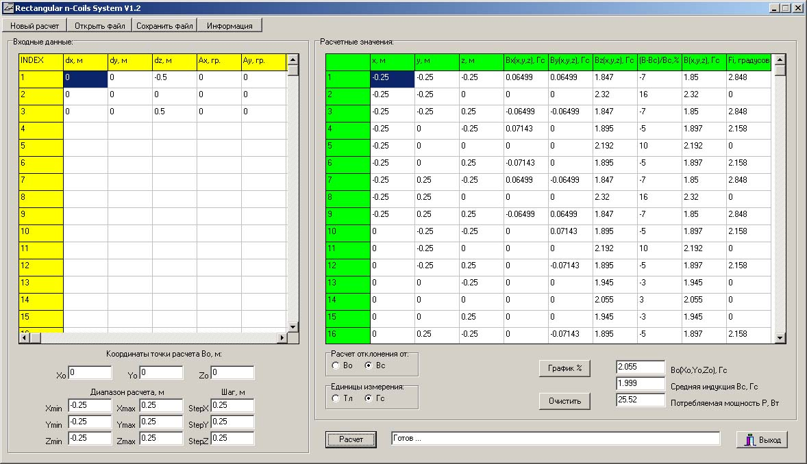
Рис. 3.3.1. Главное окно программы Rectangular n-Coils System V1.2 с расчетными значениями для пробных входных данных. Центр системы (начало координат - точка (0, 0, 0)) совпадает с центром второй катушки (INDEX = 2).
Входные данные:
INDEX
= {1 … 100} – номер катушки в системе
Сдвиг центра INDEX-катушки по оси X от начала
координат (0, 0, 0) dx[INDEX],
м
Сдвиг центра INDEX-катушки по оси Y
от начала координат (0, 0, 0) dy[INDEX],
м
Сдвиг центра INDEX-катушки по оси Z от начала
координат (0, 0, 0) dz[INDEX], м
(начало координат (центр системы) совпадает с центром
той катушки, для которой dz = dy = dz = 0)
Первый поворот INDEX-катушки вокруг своей собственной оси X' Ax[INDEX], градусов
Второй поворот INDEX-катушки вокруг своей собственной оси Y'
Ay[INDEX], градусов
Третий поворот INDEX-катушки вокруг своей собственной оси Z'
Az[INDEX], градусов
Длина INDEX-катушки a[INDEX],
м, a[INDEX] > 0
Ширина INDEX-катушки
b[INDEX], м,
b[INDEX] > 0
Число витков INDEX-катушки
N[INDEX], N[INDEX] > 0
Ток через INDEX-катушку I[INDEX],
А
Диаметр обмоточного провода INDEX-катушки
D[INDEX], мм,
D[INDEX] > 0
Удельное электрическое сопротивление провода INDEX-катушки
Roe[INDEX], Ом ∙ м, Roe[INDEX]
> 0
Расчетная координатная сетка (область расчетных значений) задается указанием
минимальных и максимальных значений по всем координатам (Xmin, Xmax,
Ymin, Ymax,
Zmin, Zmax) и шага сетки по
каждой координате (StepX, StepY, StepZ), м, Xmax >
Xmin, Ymax >
Ymin, Zmax >
Zmin
Точка с координатами (Xo, Yo, Zo), м, для расчета опорного значения модуля
магнитной индукции Bo(Xo, Yo, Zo)
Для выбора единиц магнитной индукции служит переключатель «Тл – Гс»
С помощью переключателя «Bo – Bc» можно выбрать значение модуля магнитной
индукции, относительно которого считается отклонение модуля магнитной индукции в
заданной точке
Расчетные
значения:
Активное сопротивление INDEX-катушки R[INDEX], Ом
Падение напряжения на INDEX-катушке U[INDEX], В
Координаты расчетной сетки x, y,
z, м
Компоненты вектора магнитной индукции в точке расчета (x, y, z) Bx(x,
y, z), By(x,
y, z), Bz(x,
y, z), Тл или Гс
Модуль магнитной индукции в точке расчета (x,
y, z) B(x,
y, z), Тл или Гс
Среднее значение модуля магнитной индукции в области расчетных значений
(усредненное значение по всем узлам расчетной сетки) Bc,
Тл или Гс
Опорное значение модуля магнитной индукции в точке (Xo, Yo, Zo) Bo(Xo,
Yo, Zo), Тл или Гс
Отклонение модуля магнитной индукции в точке расчета (x, y, z) от среднего
значения модуля магнитной индукции в расчетной области Bc или от опорного
значения магнитной индукции Bo(Xo, Yo, Zo), %
Угол между вектором магнитной индукции в точке расчета (x, y, z) и осью Z
глобальной системы координат Fi, градусов
Суммарная потребляемая активная мощность P, Вт
После запуска exe-файла программы можно напрямую вводить входные параметры системы катушек в таблицу «Входные данные:». Если система катушек состоит из множества однотипных катушек, то для ускорения ввода можно воспользоваться клавишей «Новый расчет». После ее нажатия появится форма для ускоренного ввода параметров однотипных катушек с заданным расстоянием между ними (рис. 3.3.2). После того, как входные данные с помощью этой формы будут введены с помощью кнопки «Ввод-Выход», их при необходимости можно откорректировать в основном окне программы (рис. 3.3.1).
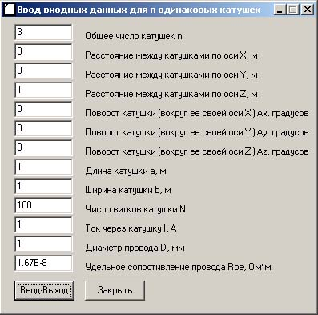
Рис. 3.3.2. Форма для ускоренного ввода входных параметров однотипных катушек для программы Rectangular n-Coils System V1.2.
При вводе входных параметров необходимо учитывать принятый в операционной системе формат разделителя для десятичной дроби – запятая или точка. Если формат разделителя неправильный (операционная система выдает сообщение об ошибке), то необходимо либо поменять формат разделителя при вводе данных в программу (использовать запятую), либо поменять формат разделителя в операционной системе Windows с запятой на точку (Например, для Windows XP: Мой компьютер – Панель управления – Язык и региональные стандарты – Настройка – Разделитель целой и дробной части. Установить точку). При вводе данных в экспоненциальном формате (например, 1.67E-8 вместо 0.0000000167) необходимо использовать латинский алфавит для буквы E, при вводе русской буквы Е вместо латинской E на экран монитора при попытке расчета будет выводиться сообщение об ошибке (к цифрам это не относится).
Далее можно производить расчет выходных параметров нажатием на кнопку «Расчет». Программа производит проверку корректности входных параметров и в случае их выхода за пределы возможного диапазона выдает соответствующее сообщение. Рассчитанные параметры заносятся в таблицу «Расчетные значения» и в окна «Средняя индукция Bc, Тл или Гс» и «Потребляемая мощность P, Вт». Время расчета зависит от количества катушек в системе и числа узлов расчетной сетки и составляет обычно порядка от 1 до 10 секунд. Порядок точности расчета на уровне 5 %.
В некоторых случаях для удобства работы можно очистить таблицу «Расчетные значения:» с помощью кнопки «Очистить».
При нажатии на кнопку «График, %» на новой форме выводится график отклонений (в процентах) модуля магнитной индукции в расчетных точках от среднего значения модуля магнитной индукции в расчетной области (Bc) или от опорного значения модуля магнитной индукции Bo(Xo, Yo, Zo). По этому графику можно приблизительно оценить неоднородность поля в расчетной области (рис. 3.3.3).
Рис. 3.3.3. Форма для вывода графика отклонений модуля магнитной индукции в расчетной области для программы Rectangular n-Coils System V1.2.
Входные и выходные параметры могут быть записаны в три текстовых файла (типа csv). После нажатия на кнопку «Сохранить файл» открывается диалоговое окно, в котором предлагается выбрать имя файла для входных данных и его формат (десятичный разделитель в виде точки или запятой). В этот файл записываются данные из таблицы «Входные данные:». Во второй файл, к имени которого добавляется _Range, записываются параметры расчетной сетки. В третий файл, к имени которого добавляется _Results, записываются данные из таблицы «Расчетные значения:».
Входные параметры могут быть загружены из текстового файла (типа csv). После нажатия на кнопку «Открыть файл» открывается диалоговое окно, в котором предлагается выбрать файл для загрузки. Программа проверяет правильность формата файла и заносит данные в таблицу «Входные данные:» и в окна для задания параметров расчетной сетки.
Оперативно получить справочную информацию по программе можно, нажав кнопку «Информация». При этом открывается окно «Справочная информация» (рис. 3.3.4).
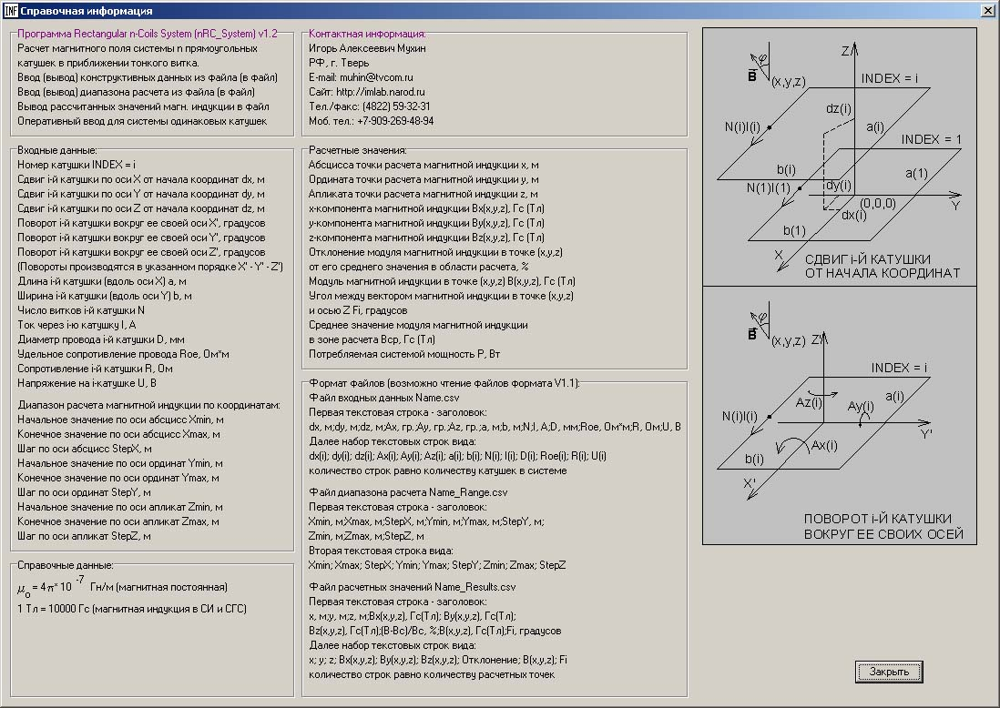
Рис. 3.3.4. Окно «Справочная информация» программы Rectangular n-Coils System V1.2.
Завершить работу программы можно с помощью кнопки «Выход». Проверить правильность расчета на данном компьютере для пробных входных данных можно по главному окну программы на рис. 3.3.1.
По вопросу получения консультаций, а также полных версий программ обращайтесь к автору (см. раздел Контактная информация).
Соотношения между единицами измерения магнитной индукции (Тл - Тесла, Гс - Гаусс):
Ссылки:
10.07.2018
Альтернативные источники
энергии
Компьютеры и
Интернет
Магнитные поля
Механотронные системы
Перспективные
разработки
Электроника и
технология